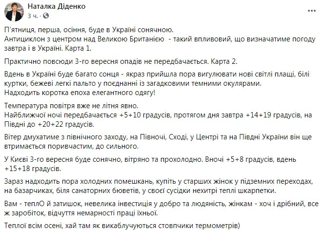

3 сентября украинцев ждет солнечная погода без осадков.
Об этом на своей Facebook-странице написала народный синоптик Наталья Диденко.
Она отметила, что хорошей погоде поспособствует влияние антициклона. При этом подчеркнула, что температура будет уже не летней: ночью – 5-10 градусов выше ноля, днем – 14-19, в южных регионах – до 20-22.
Диденко спрогнозировала также порывистый ветер в северных, центральных, восточных и южных областях.
Отдельно она рассказала о погоде в Киеве. По ее прогнозу, жителей столицы ждет солнечная, но ветреная и прохладная погода – +5-+8 градусов ночью, до +18 градусов днем.
Взято с сайта Хвиля